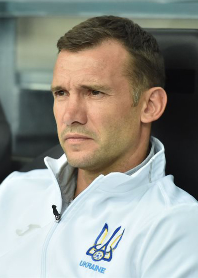

Андрі́й Микола́йович Шевче́нко (нар. 29 вересня 1976, с. Двірківщина, Яготинський район, Київська область, Українська РСР, СРСР) — український футболіст, що грав на позиції нападника за київське «Динамо», «Мілан» та лондонський «Челсі».
Заслужений майстер спорту України (2003). Має звання Героя України (2004). Кавалер ордена «За заслуги» I, II, III ступеня, ордена «За мужність» III ступеня та ордена князя Ярослава Мудрого V ступеня. Національна легенда України.
Згодом футбольний тренер. Протягом 2016—2021 років — головний тренер національної збірної України. З листопада 2021 року по січень 2022 року очолював тренерський штаб італійського «Дженоа».
2003 року став першим українцем, хто виграв Лігу чемпіонів. Володар «Золотого м'яча» 2004 — призу, який вручають найкращому футболісту світу (на той час — кращому футболісту Європи). Один з найрезультативніших бомбардирів єврокубкових турнірів за всі сезони[3]. Найкращий бомбардир національної збірної України. Тричі ставав найкращим бомбардиром Ліги чемпіонів, двічі — чемпіонату Італії. Другий бомбардир за всю історію «Мілана».
З 25 січня 2024 року — Президент Української асоціації футболу.

Кар'єра гравця
«Динамо» (Київ) (1994—1999)
Андрій Шевченко народився в селі Двірківщина Яготинського району Київської області в сім'ї прапорщика Миколи Григоровича Шевченка[4]. Через три роки після народження сина сім'я Шевченків переїхала до Києва — у район Оболонь. Там Андрій пішов у перший клас 216-ї середньої школи. В 9 років потрапив до футбольної секції. Перший тренер — Олександр Шпаков. Батьки спочатку скептично ставилися до такого захоплення свого чада, але тренер зумів переконати їх.
1990 року 14-річні «динамівці» виграли Кубок Іана Раша в Уельсі, а Шевченко став найкращим бомбардиром турніру і отримав пару бутсів із рук самого Іана Раша.[5] 1991 року «динамівські» юнаки перемогли у чемпіонаті СРСР серед хлопців 1976 р. н. Команда їздила на міжнародні турніри до Європи, зокрема зіграла на міланському «Сан-Сіро».[6]
Перша поява Андрія Шевченка в дорослому футболі відбулася у сезоні 1992/93. Із 12 м'ячами він став найкращим бомбардиром першолігової команди «Динамо-2». Потім його запросили в молодіжну збірну України, і він з'явився у вищій лізі — вперше вийшов на заміну 8 листопада 1994 року (гра з «Шахтарем»). Тоді команду «Динамо» тренував Йожеф Сабо.
Перший матч у збірній України — 25 березня 1995 у Загребі проти Хорватії (0:4).
Єврокубковий дебют — гра проти московського «Спартака» 23 листопада 1994 року. Перший гол у єврокубках забив у ворота мюнхенської «Баварії» в програному матчі (1:4), коли йому було лише 18 років. Згодом до команди повертається Валерій Васильович Лобановський, якого «Шева» буде називати своїм батьком та вчителем. У 1997 встановлює динамівський рекорд — хет-трик у матчі «Барселона» — «Динамо (Київ)» (0:4). Свій сотий гол у кар'єрі забив 28 квітня 1999 року в матчі Кубку України у ворота «Зірки».
У нападі збірної України він творив тандем з іншим київським «динамівцем» Сергієм Ребровим. У півзахисті їх підтримували партнери з клубу Віталій Косовський та Андрій Гусін — наприкінці 90-х «Динамо» та збірна були майже синонімічними поняттями і грали достойно проти сильних команд. Найвищим успіхом став вихід до півфіналу Ліги чемпіонів, коли у 1/4 фіналу кияни у двоматчевому протистоянні вибили мадридський «Реал». Перший матч відбувався у Мадриді і рахунок відкрив саме Шевченко — після пасу Реброва він на фантастичній швидкості прорвався до воріт іспанців і забив Бодо Іллгнерові. Гра завершилась нічиєю 1:1. У київській грі Андрій Шевченко відкрив рахунок, добиваючи м'яч після власного невдалого пенальті, а потім добив «Реал» другим голом — 2:0.
Півфінальним суперником була «Баварія» (Мюнхен). Перший матч грали у Києві — спочатку Шева технічно перекидає Олівера Кана після пасу Валентина Белькевича — 1:0. У кінці першого тайму він пробив штрафний з правого флангу і куля, нікого не зачепивши, приземлилась у воротах — 2:0. На жаль, «Динамо» припустилося кількох помилок у кінці гри та не змогло втримати перемогу — 3:3. У Мюнхені господарі перемогли 1:0. Таким чином Андрій Шевченко став півфіналістом Ліги чемпіонів. Але в одній номінації він все-таки переміг — 10 голів принесли йому титул найкращого голеадора Ліги чемпіонів.
До того часу за бомбардиром вже стежили скаути з багатих європейських клубів. Такий успіх зробив вихованця «Динамо» ласим шматком для провідних команд континенту. Влітку 1999 року італійський «Мілан» заплатив за Андрія 25 млн доларів.
Українець посів 3-є місце в опитуванні «Золотого м'яча» 1999. Нападника випередили тільки Рівалдо і Девід Бекхем.